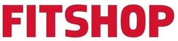

Trade Mark Journal No.2025/047 21 November 2025
WO0000001871369 (9,10,28,35)
Office of origin: European Union Intellectual Property Office (EUIPO)
Date of International Registration:25 June 2025
Date of designation in the UK:
25 June 2025

The mark contains the colour red.
International priority date claimed: 15 January 2025
(European Union Intellectual Property Office (EUIPO))
(019131147)
- Class 9
- Ergometers; weighing, measuring, checking (supervision) and teaching apparatus and weighing, measuring, checking (supervision) and teaching instruments; weighing scales for medical use; measuring devices, chest straps, and displays for training data, in particular for watt, speed, heart rate and calorie consumption; boxing requisites, namely head protection.
- Class 10
- Medical apparatus, in particular apparatus for moving variable weight loads for physical therapy purposes; physical therapy equipment; massage apparatus; beauty care massage apparatus; gloves for massage; horsehair gloves for massage, physical exercise apparatus for medical purposes; medical apparatus for physiotherapy and physical exercise; orthopaedic articles; orthopaedic bandages for joints; knee bandages, orthopaedic; analysing apparatus for medical purposes; blood analysing devices; sphygmotensiometers; measuring apparatus for determining body fat, diagnostic apparatus for medical purposes; ice bags for medical purposes; elastic bandages, electric acupuncture instruments; electrodes for medical use; electrocardiographs; galvanic therapy devices; belts for medical purposes; gloves for medical purposes; condoms; air mattresses for medical purposes; orthopaedic shoes; orthopaedic soles; supports for flat feet; shoe joint springs (orthopaedic articles); radiotherapy equipment; ultraviolet lamps for medical purposes; vibromassage apparatus.
- Class 28
- Gymnastic and sporting articles; body training apparatus [exercise]; gymnastics and exercise equipment; trampolines [sports articles]; devices for physical exercises; boxing gloves; punching bags; boxing requisites, namely punching cushions, grappling dummies, skipping ropes, punching bags, groin protectors, shin guards and elbow guards; fitness devices for endurance training; stationary exercise bicycles; treadmill for physical exercise; rowing machines for physical exercise; cross-trainers; elliptical trainers; ergometers (training devices).
- Class 35
- Retail and wholesale services and online or catalogue mail order services, in relation to the following goods dietetic products for medical use, medical tonics, isotonic and energy drinks containing vitamins and minerals, base materials for preparing the aforesaid beverages, including beverage powders, dietary supplements adapted for medical use and nutrients adapted for medical use, vitamin preparations being food supplements, diet drinks, dietetic substances, dietetic foods, protein supplements, malted milk beverages, protein-based foodstuff, nutritional supplements, herbal and food additives in powder, capsule or tablet form, ergometers, weighing, measuring, checking (supervision) and teaching apparatus and instruments, weighing scales for medical use, apparatus for recording, transmission or reproduction of sound or images, measuring apparatus, chest straps and display apparatus for training data, in particular for wattage, speed, heart rate and calories burned, wrist devices, monitors, testing apparatus, sensors, peripherals systems and/or systems for measuring and/or recording (other than for medical purposes) a variety of physiological data, biological signals and/or exercise parameters, mobile digital electronic devices for individuals in training, software and/or firmware for the aforesaid goods, medical apparatus, in particular apparatus for moving variable weight loads for physical therapy, physical therapy equipment, massage apparatus, aesthetic massage apparatus, gloves for massage, horsehair gloves for massage, physical exercise apparatus for medical purposes, medical apparatus for physiotherapy and physical exercise, orthopaedic articles, orthopaedic bandages for joints, knee bandages (orthopaedic), analysing apparatus for medical purposes, blood analysing apparatus, sphygmotensiometers, measuring apparatus for determining body fat, diagnostic apparatus for medical purposes, ice bags for medical purposes, elastic bandages, electric acupuncture instruments, electrodes for medical use, electrocardiographs, galvanic therapeutic devices, belts for medical purposes, gloves for medical purposes, condoms, air mattresses for medical purposes, orthopaedic shoes, orthopaedic soles, supports for flat feet, shoe joint springs (orthopaedic articles), radiotherapy equipment, ultraviolet lamps for medical purposes, vibromassage apparatus, printed matter, bookbinding material, books, clothing, footwear, headgear, mats, gymnasium mats, gymnastic, exercise and training mats, underlays for sports apparatus, gymnastic and sporting articles, fitness apparatus, fitness devices for endurance training, stationary exercise bicycles, exercise treadmill, rowing machines for physical exercise, cross-trainers, elliptical trainers, ergometers (training devices), body-building apparatus, trampolines (sports articles), dumbbells, devices for physical exercise, gloves (accessories for games and home sports), stationary exercise bicycles, boxing gloves, punching bags, boxing requisites, expanders [exercisers], treadmills, rollers for stationary exercise bicycles, elbow guards [sports articles], knee guards [sports articles], protective paddings [parts of sports suits], nets for sports, swings, shin guards [sports articles], food concentrates in the form of prepared foodstuffs or for individual mixing, consisting primarily of powdered milk and/or animal and/or vegetable proteins and/or carbohydrates, including with added vitamins, minerals and sugar, including in both solid and liquid form, food concentrates in the form of prepared foodstuffs or for individual mixing, consisting primarily of animal or vegetable proteins and/or carbohydrates, dried fruits, including with added plant fibres, cereals and sugar, including in both solid and liquid form, preserved, dried and cooked fruits and vegetables, protein for food purposes, milk beverages, milk predominating, milk products.
Fitshop GmbH
Representative: Barker Brettell LLP, 100 Hagley Road, Edgbaston Birmingham B16 8QQ UNITED KINGDOM